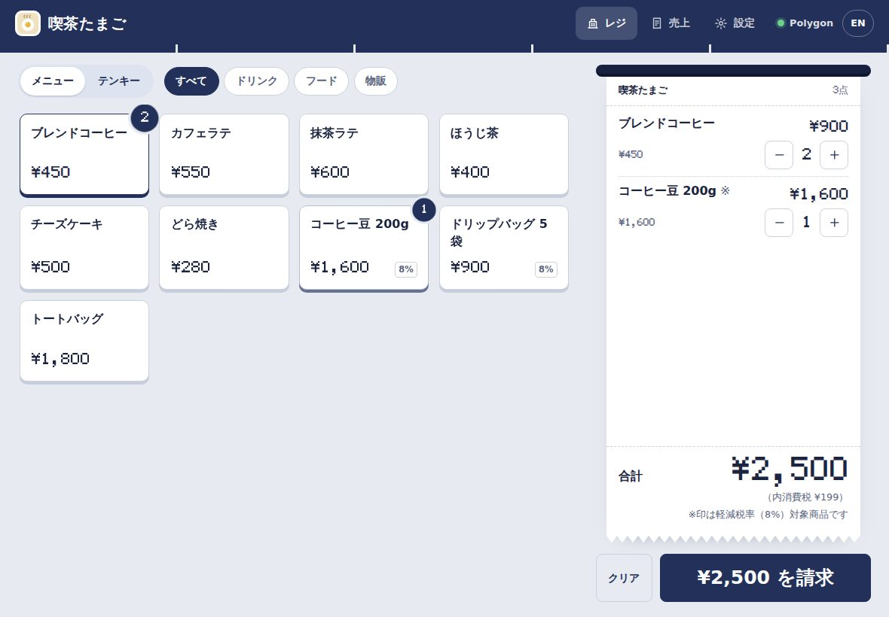
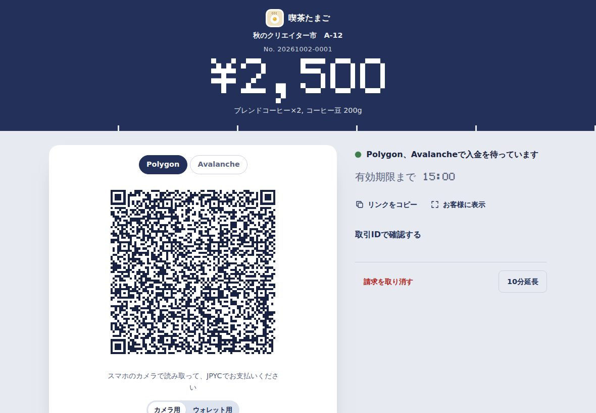
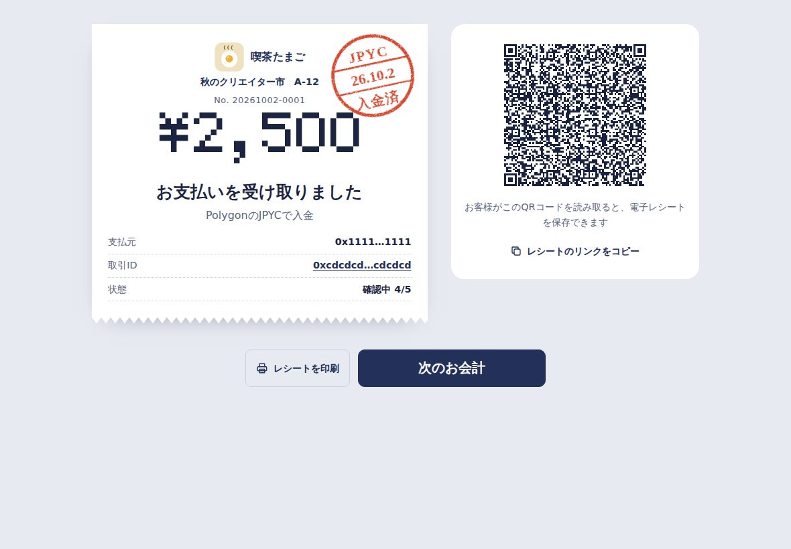
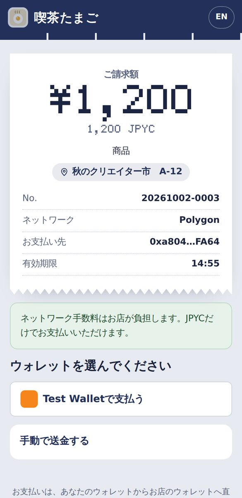
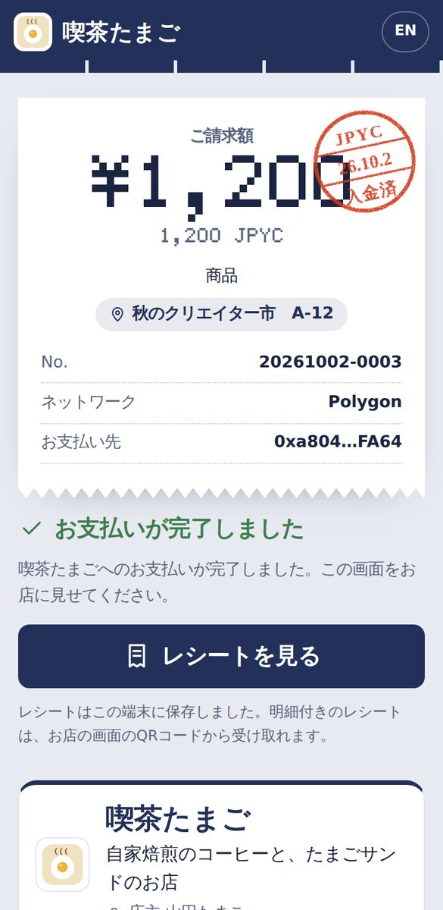

JPYCで受け取る、
お店のレジ。
A register for
taking JPYC.
登録なし、月額なし、決済手数料なし。タブレットとウォレットがあれば、今日から始められます。お金はお客様のウォレットから、お店のウォレットへ直接届きます。 No sign-up, no monthly fee, no payment processing fee. With a tablet and a wallet you can start today. Money goes straight from the customer's wallet to yours.
アプリのインストールは不要です。まずは「テストモード」で、無料のテスト用JPYCで試せます。 Nothing to install. Try it first in Test mode with free test JPYC.





Reji
ご利用料金What it costs
- 初期費用Setup
- ¥0
- 月額料金Monthly fee
- ¥0
- 決済手数料Payment processing fee
- ¥0
- 合計Total
- ¥0
※ブロックチェーンのネットワーク手数料（ごく少額）は、お客様、または「手数料なし決済」ならお店が負担します。 * The blockchain network fee (very small) is paid by the customer, or by the store with no-fee payments.
お金は、お店へ直接。Money goes straight to you.
Rejiはお金を預かりません。お客様のウォレットから、お店のウォレットへ直接JPYCが届きます。途中に決済会社も、Rejiのサーバーもありません。Reji never holds money. JPYC moves directly from the customer's wallet to the store's wallet, with no payment company and no Reji server in between.
データは、お店の端末に。Your data stays on your device.
売上・商品・設定は、お店のタブレットの中だけに保存されます。入金の確認は、誰でも見られるブロックチェーンの記録で行います。Sales, products and settings stay on the store's tablet. Payments are checked against the public blockchain record.
アプリストアも、契約もいらない。No app store, no contract.
ブラウザで開くだけ。ホーム画面に追加すれば、アプリのように使えます。Open it in a browser. Add it to the home screen and it works like an app.
お会計は3ステップCheckout in three steps
-
商品を選んで「請求」Pick items, tap Charge
商品ボタンかテンキーで入力。消費税（10%・8%）は自動で計算されます。Tap products or key in an amount. 10% and 8% consumption tax are calculated for you.
-
お客様がQRを読み取って支払うThe customer scans and pays
スマホのカメラで読み取り、MetaMaskなどのウォレットで支払います。They scan with their phone camera and pay from a wallet such as MetaMask.
-
数秒で「入金済」Paid in seconds
レジがブロックチェーン上の入金を見つけると、日付印が押されます。電子レシートはQRでお渡し。When the register sees the payment on-chain, it stamps the receipt. Hand over an e-receipt by QR.
お店に必要なものは、そろっていますEverything a counter needs
- インボイス対応のレシートInvoice-ready receipts
- 軽減税率（※）、税率ごとの消費税、登録番号。印刷は58mm・80mm。Reduced rate marks, tax per rate and your registration number. Prints on 58 or 80 mm paper.
- 電子レシートE-receipts
- QRでお客様のスマホに保存。ブロックチェーンで支払いを確認できます。Saved to the customer's phone by QR, and verifiable on-chain.
- 売上集計とCSVSales and CSV
- 日計・税率別・商品別の集計、日計表の印刷、Excel・会計ソフト用のCSV。Daily totals by tax rate and item, printable summary, CSV for Excel and accounting.
- 4つのチェーンFour chains
- Polygon・Avalanche・Ethereum・Kaia のJPYCを同時に受け付け。Accept JPYC on Polygon, Avalanche, Ethereum and Kaia at the same time.
- 入金の見落としを防ぐNothing slips through
- 金額違いの入金の表示、取引IDでの確認、期限後の入金の「再確認」。Wrong-amount payments are shown, you can check by transaction ID, and late payments are found later.
- 店主確認とPINOwner check and PIN
- 受取アドレスの変更には店主の署名が必要。設定はPINで保護。Changing the receiving address needs the owner's signature. Settings are PIN-protected.
- 日本語・英語Japanese and English
- レジもお客様の画面も、ボタンひとつで切り替え。Register and customer pages switch with one tap.
- オフラインで起動Opens offline
- ホーム画面に追加でき、通信が不安定でもレジ画面が開きます。Add to the home screen; the register opens even on a patchy connection.
- お店のロゴと色Your logo and colour
- ロゴ、お店の色、Instagramなどのリンクを、レジ、お客様の画面、レシートに。どのお店のレシートか、ひと目でわかります。Your logo, colour and a link (Instagram, LINE…) on the register, the customer's screen and receipts, so every receipt is clearly yours.
- 画面の案内で、5分で準備Guided setup in 5 minutes
- 必須・推奨・任意を示しながら、順番に設定。途中で閉じても、続きから再開できます。Step by step, with required, recommended and optional steps marked. Close it anytime and pick up where you left off.
- お店のページと店頭POPStore page and counter sign
- 紹介、SNS、出店中のイベントとスペース番号をまとめたページを、お客様が開いてシェアできます。はがきサイズのPOPも印刷できます。応援（投げ銭）も、控えめに受け付けられます。A page with your introduction, links and today's event booth that customers open and share, plus a postcard-size counter sign to print. Tips can be accepted too, quietly.
- 宛名入りの領収書Receipts with an addressee
- お客様が自分のスマホで宛名と但し書きを入れて、領収書として保存・印刷できます。宛名はお店に送られません。Customers add a name and purpose on their own phone, then save or print it as a formal receipt (領収書). The name is never sent to the store.
手数料なし決済：お客様はJPYCだけNo-fee payments: customers need only JPYC
ふつう、ブロックチェーンで送金するには「POL」という手数料用の通貨が必要です。Rejiの手数料なし決済（Polygon）なら、お客様は署名するだけ。手数料は、お店が自分で用意する「ガス用ウォレット」から支払われます。Sending on a blockchain normally needs a little POL for the network fee. With Reji's no-fee payments on Polygon, the customer only signs; the fee comes from a gas wallet the store sets up itself.
- お店ごとに自分で管理。ガス用ウォレットはお店のタブレットの中に作られ、店主が少額のPOLを入れて管理します。Rejiの運営者が立て替えたり、預かったりすることはありません。Each store manages its own. The gas wallet is created on the store's tablet and the owner tops it up with a little POL. Nobody running Reji fronts the fees or holds the funds.
- サーバー不要。お客様の署名は、Nostrという公開の通信網でお店のレジに届きます。No server. The customer's signature reaches the register over Nostr, an open relay network.
- 安全装置つき。レジは、画面に出ている請求と金額・宛先がぴったり合う支払いだけを送信します。残高が少なくなると、自動で通常の支払いに切り替わります。Built-in safety. The register only submits a payment that exactly matches the charge on screen. If the balance runs low, customers simply pay the normal way.
始め方Getting started
ウォレットを用意するGet a wallet
MetaMaskなどで、お店専用のウォレットを作ります。秘密鍵・シードフレーズは紙に書いて安全に保管してください。Create a wallet just for the store, for example in MetaMask. Write the recovery phrase on paper and keep it safe.
Rejiを開いて設定するOpen Reji and set up
店名と、お店のウォレットの公開アドレス（0x…）を入力します。秘密鍵は入力しません。Enter your store name and the wallet's public address (0x…). Never a private key.
ウォレットで店主確認Confirm you're the owner
ウォレットで短い文章に署名して、アドレスがご自身のものか確認します。無料で、送金もありません。Sign a short message to confirm the address is yours. Free, and nothing is sent.
テストモードで練習Practice in Test mode
無料のテスト用JPYC（faucet.jpyc.co.jp）で、お会計からレシートまで試せます。Try everything from checkout to receipts with free test JPYC from faucet.jpyc.co.jp.
本番で営業開始Go live
設定で「本番」に切り替え、少額で入金を確かめたら準備完了です。Switch to Live in Settings, test with a small amount, and you're ready.
（任意）手数料なし決済(Optional) No-fee payments
設定でガス用ウォレットを作り、POLを少し入れるだけ。Create the gas wallet in Settings and add a little POL.
お客様に必要なものWhat customers need
JPYCが入ったスマホのウォレット（MetaMaskなど）だけです。手数料なし決済のお店ではPOLは不要。支払いが終わると、レシートがお客様のスマホに保存されます。Just a phone wallet with JPYC in it, such as MetaMask. At stores with no-fee payments, no POL is needed. The receipt is saved on their phone afterwards.
よくある質問Questions
本当に無料ですか？Is it really free?
はい。Rejiの利用料・決済手数料はかかりません。かかるのはブロックチェーンのネットワーク手数料だけで、通常はお客様が、手数料なし決済ではお店が負担します。Yes. There are no fees for using Reji or for payments. The only cost is the blockchain network fee, paid by the customer, or by the store with no-fee payments.
お金を預けたり、中継したりしますか？Does Reji hold or pass on money?
いいえ。JPYCはお客様のウォレットからお店のウォレットへ直接送られます。Rejiは、ブロックチェーン上の記録を見て入金を確認するだけです。No. JPYC goes straight from the customer's wallet to the store's. Reji only reads the blockchain to see that it arrived.
データはどこに保存されますか？Where is my data stored?
お店の端末のブラウザの中だけです。外部のサーバーには送られません。設定から、バックアップを保存・復元できます。Only in your device's browser; nothing is sent to a server. You can download and restore backups in Settings.
複数の店舗・複数のレジで使えますか？Can I run several stores or registers?
はい。店舗ごと・端末ごとに設定します。同じウォレットを複数のレジで使うときは「端末記号」を設定すると、レシート番号が重なりません。手数料なし決済のガス用ウォレットも端末ごとです。Yes. Each store and device is set up on its own. If registers share a wallet, give each a Register ID so receipt numbers don't clash. Each device has its own gas wallet.
受け取ったJPYCを円にするには？How do I turn JPYC into yen?
JPYCの公式サービスでの償還手続きに従ってください。Follow the redemption process on JPYC's official service.
インボイス（適格請求書）は？What about invoices?
登録番号を設定すると、レシートに適格簡易請求書の記載事項（登録番号・税率ごとの対象額と消費税など）が入ります。会計上の扱いは税理士などの専門家にご確認ください。Add your registration number and receipts carry what a qualified simplified invoice needs. Check the accounting treatment with a tax professional.
返金はできますか？Can I refund?
Rejiに返金ボタンはありません。店主がお店のウォレットから、お客様のアドレス（レシートの「支払元」）へ送金して返金します。There's no refund button. The owner sends JPYC back from the store wallet to the customer's address (shown on the receipt).
お店が増えても大丈夫ですか？What if many stores use it?
はい。Rejiは各お店の端末から直接、無料の公開ノードにつないで入金を確認します。運営者のサーバーを通らないので、お店が増えても混み合いません。速いノードを自動で選び、混雑したノードは避けます。より安定させたいお店は、設定から自分専用の接続先（無料アカウント）も追加できます。Yes. Each store's device talks to free public blockchain nodes directly, not through a server of ours, so more stores don't add up anywhere. Reji picks fast nodes and avoids busy ones automatically, and a store can add its own free provider account for extra stability.
安全ですか？Is it safe?
Rejiはお店の秘密鍵を扱いません。受取アドレスの変更には店主の署名が必要で、設定が書き換えられるとレジに警告が出ます。入金は、運営元の違う2つのノードで確かめてから「入金済」にします。手数料なし決済のガス用ウォレットには少額のPOLだけを入れ、万一の影響をその範囲に限ります。Reji never handles the store's private keys. Changing the receiving address needs the owner's signature, and edited settings trigger a warning on the register. Payments are confirmed on nodes from two different providers before they count. The gas wallet only holds a little POL, which limits any risk to that amount.